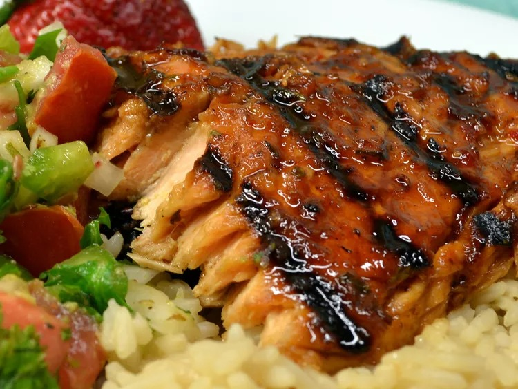

Hoisin-Glazed Salmon

Description
This spicy hoisin-glazed salmon has sweet and spicy flavors with a bold taste!
Ingredients
- ⅓ cup reduced-sodium soy sauce
- ¼ cup hoisin sauce
- 2 tablespoons olive oil
- 2 tablespoons fresh lemon juice
- 1 tablespoon chili garlic sauce
- 1 tablespoon grated fresh ginger root
- 1 clove garlic, pressed
- 6 (6 ounce) skinless, boneless salmon fillets
Steps
- Whisk together soy sauce, hoisin sauce, olive oil, lemon juice, chili sauce, ginger, and garlic in a 9x13-inch baking dish. Place salmon fillets into the marinade and turn to evenly coat. Cover the dish with plastic wrap and marinate in the refrigerator for 30 minutes.
- Preheat the oven to 350 degrees F (175 degrees C).
- Remove and discard the plastic wrap from the salmon. Use a spoon to scoop up the marinade that has collected in the bottom of the baking dish and drizzle it over salmon fillets.
- Bake in the preheated oven until salmon flakes easily with a fork, about 30 minutes.